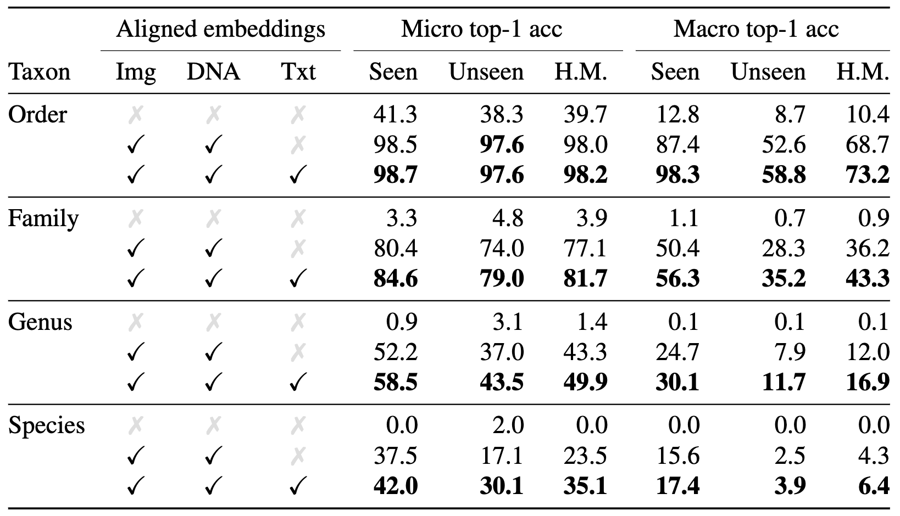
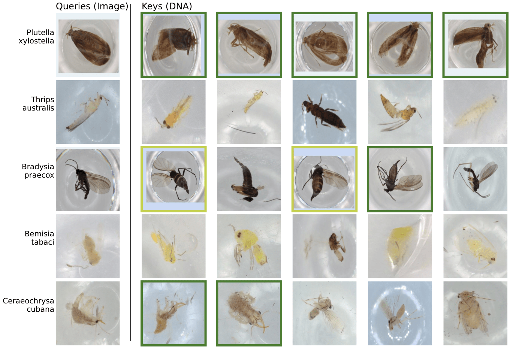
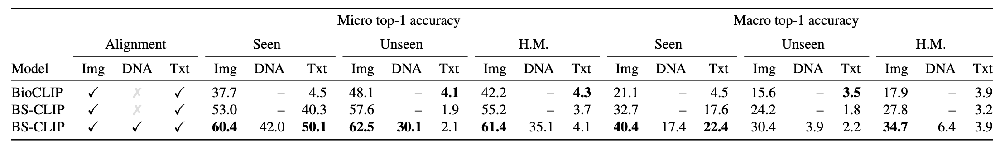

Overview

Our BIOSCAN-CLIP model consists of three encoders for processing images, DNA barcodes, and text. We start with pretrained encoders and fine-tune them using contrastive loss to align the image, DNA, and text embeddings. At inference time, we embed a query image and match it to a database of existing image and DNA embeddings (keys). We use cosine similarity to find the closest key embedding and use its taxonomic label to classify the query image.
Taxonomic classification and retrieval
We can use our aligned image-DNA embedding space to performance taxonomic classification and do cross-modal retrieval from image to DNA. We use the data from BIOSCAN-1M, a large dataset of insect images paired with DNA barcode, and establish train/validation/test split such that we set aside a set of species that are unseen during for evaluation. For the validation and test splits, we also separate samples that we use as queries from the labeled database of keys that we match against.

We use image embeddings as queries to DNA embeddings and show that we are able to perform taxonomic classification over order, family, genus, and species. As we go down the taxonomy, the classification problem becomes increasingly challenging as we go from just 16 classes at the order level to over 8000 at the species level. In addition, there is a large imbalance across classes, with many species having less than 10 records.
Examples of retrieving with image query and matching against DNA keys show that even with cross-modal retrieval we can retrieve samples that are visually similar. The dark green border indicates the retrieved sample had the correct species, while the yellow green border indicates that the genus matches but not the species.
We compare our aligned embedding space with that of BioCLIP, a recent model that aligns images with text derived from taxnomic labels. We show that by aligning with DNA, we can achieve more accurate taxonomic classification. Note that we use the pretrained model of BioCLIP which is trained on a wider dataset than ours, and does not use the same careful training split we use so that it is likely that their model was already exposed to our unseen species during training. We believe these two differences account for the higher performance of our BIOSCAN-CLIP (with image-text embeddings) on the seen subset but lower performance on the unseen subset.
